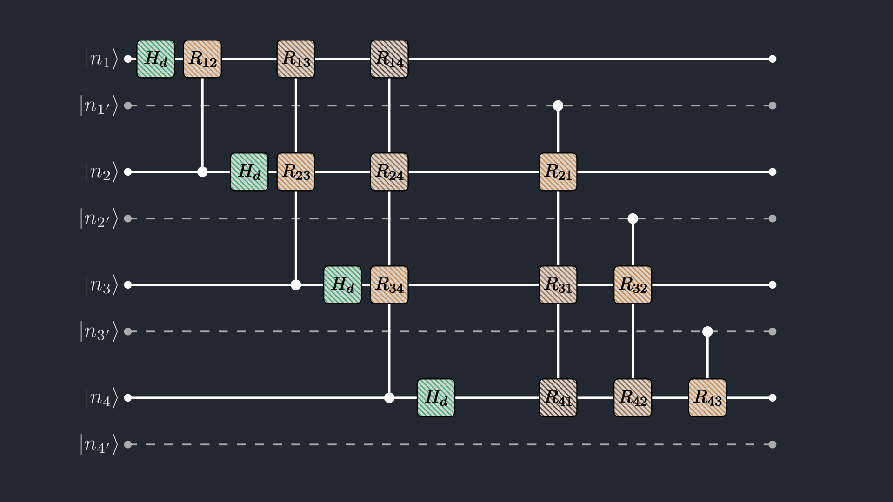
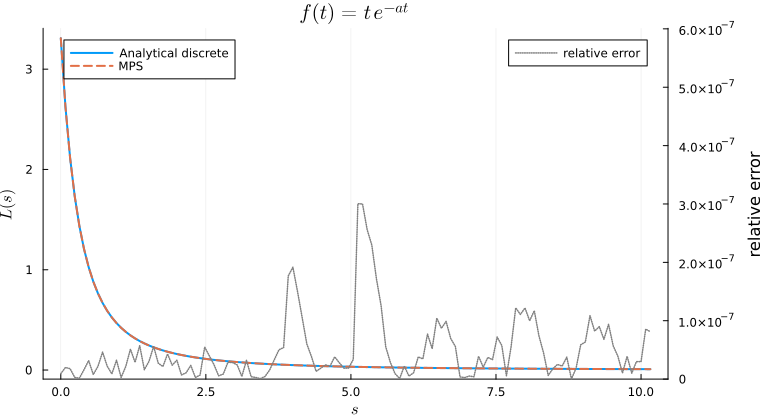
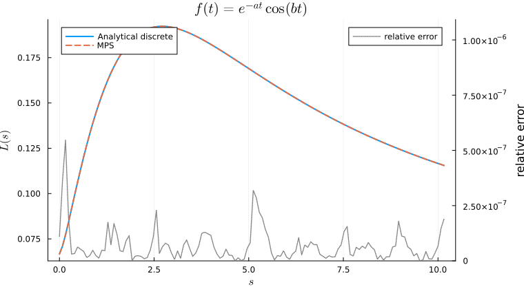

Damping Transform Tutorial
This walkthrough shows how to use QILaplace.jl to compute the real-axis damping transform, and how to interpret it as a discrete Laplace transform on a sampled time grid.
Unlike the QFT, the damping transform is non-unitary: its gates dampen amplitudes by real exponential factors instead of rotating them by complex phases. To implement that cleanly, we use the doubled main-copy representation ZTMPS rather than the single-register SignalMPS.
Throughout, we work with the real Laplace transform
\[L(s) = \int_0^\infty f(t)\,e^{-st}\,dt,\qquad s\ge 0,\]
and its finite-grid Riemann approximation
\[L(s_k) \approx \Delta t \sum_{j=0}^{N-1} f(t_j)\,e^{-s_k t_j}, \qquad t_j = j\Delta t,\ s_k = k\Delta s.\]
The damping transform implemented in QILaplace.jl uses the kernel
\[y_k = \frac{1}{\sqrt{N}}\sum_{j=0}^{N-1}x_j \exp\!\left(-\omega_r\,\frac{kj}{N}\right).\]
Setting $\omega_r = N\,\Delta s\,\Delta t$ makes this kernel equal to $e^{-s_k t_j}$, so the physical Laplace sum is recovered by
\[L(s_k) \approx \Delta t\,\sqrt{N}\,y_k.\]
We first walk through a three-qubit toy example to see exactly how the paired-register state and the damping circuit work, and then scale up to two richer signals.
using QILaplace, ITensors
using LinearAlgebra, Printf
using Plots, LaTeXStringsSetting up the signal
A tiny grid with n = 3 qubits (N = 2^3 = 8 points) makes every index concrete. We sample a simple exponential $f(t) = e^{-at}$.
n = 3
N = 2^n
Δt = 0.3
Δs = 0.5
ωr = N * Δs * Δt
t_grid = Δt .* collect(0:(N - 1))
s_grid = Δs .* collect(0:(N - 1))
a = 0.8
x = exp.(-a .* t_grid)
@show ωr
@show round.(x; digits=4);ωr = 1.2
round.(x; digits = 4) = [1.0, 0.7866, 0.6188, 0.4868, 0.3829, 0.3012, 0.2369, 0.1864]
Constructing the ZTMPS
The damping transform acts on the paired-register state
\[|x\rangle_{\mathrm{pair}} = \sum_{j=0}^{N-1}x_j\, |j\rangle_{\mathrm{main}}|j\rangle_{\mathrm{copy}},\]
which signal_ztmps(x) builds as a ZTMPS. The main register will carry the transform index $k$; the copy register keeps an untouched record of the input index $j$ that the damping gates can read as controls. Internally, the package interleaves main and copy qubits at each site, which keeps the copy constraint local and keeps bond dimensions small.
ψz = signal_ztmps(x; cutoff=1e-14, maxdim=64)ZTMPS with 3 sites:
Site 1:
Amain: dim=2, tags="site-1" | dim=2, tags="bond-copy-1"
Acopy: dim=2, tags="bond-copy-1" | dim=1, tags="bond-1" | dim=2, tags="site-copy-1"
Site 2:
Amain: dim=1, tags="bond-1" | dim=2, tags="site-2" | dim=2, tags="bond-copy-2"
Acopy: dim=2, tags="bond-copy-2" | dim=1, tags="bond-2" | dim=2, tags="site-copy-2"
Site 3:
Amain: dim=1, tags="bond-2" | dim=2, tags="site-3" | dim=2, tags="bond-copy-3"
Acopy: dim=2, tags="bond-copy-3" | dim=2, tags="site-copy-3"
Sampling helpers
To pull a specific coefficient out of ψz, we need to specify which computational basis state we are asking about. Because the qubits are interleaved as (main₁, copy₁, main₂, copy₂, …), we write two small helpers.
int_to_bits converts an integer to an n-bit MSB-first array:
function int_to_bits(v::Integer, n::Int)
return reverse(Int.(digits(v; base=2, pad=n)))
end
@show int_to_bits(5, 3);int_to_bits(5, 3) = [1, 0, 1]
interleave_bits weaves a main bitstring and a copy bitstring into the interleaved layout the MPS expects:
function interleave_bits(main_bits, copy_bits)
length(main_bits) == length(copy_bits) ||
throw(ArgumentError("main_bits and copy_bits must have the same length"))
bits = Vector{Int}(undef, 2 * length(main_bits))
for i in eachindex(main_bits)
bits[2i - 1] = Int(main_bits[i])
bits[2i] = Int(copy_bits[i])
end
return bits
end
@show interleave_bits([1, 0, 1], [0, 1, 0]);interleave_bits([1, 0, 1], [0, 1, 0]) = [1, 0, 0, 1, 1, 0]
With these two helpers, reading a coefficient of ψz for any pair of main/copy bitstrings is a one-liner. Since the encoded state is $\sum_j x_j |j\rangle_{\mathrm{main}}|j\rangle_{\mathrm{copy}}$, the amplitude is only non-zero when the main and copy bitstrings match:
j_demo = 5
demo_bits = int_to_bits(j_demo, n)
amp_match = coefficient(ψz, interleave_bits(demo_bits, demo_bits))
@show amp_match x[j_demo + 1];amp_match = 0.301194211912202
x[j_demo + 1] = 0.301194211912202
Constructing the DT circuit
The damping transform factorizes the real exponential weight $\exp(-\omega_r\,kj/N)$ into contributions from individual binary digits of $k$ and $j$ (Appendix A of the paper).

Figure 1. The damping transform circuit. In the circuit diagram, the hatched boxes are exactly the non-unitary gates ($H_d$ and $R_{lm}$) that create the real exponential damping.
\[H_d = \frac{1}{\sqrt{2}} \begin{pmatrix} 1 & 1 \\ 1 & e^{-\omega_r/2} \end{pmatrix}, \qquad R_{lm} = \begin{pmatrix} 1 & 0 \\ 0 & e^{-\omega_r / 2^{m-l+1}} \end{pmatrix},\]
The local ingredients are a damped Hadamard ($H_d$) and a set of target-site damping gates ($R_{lm}$), connected by controls read from both the main (left half of the circuit) and copy registers (right half of the circuit): if the control qubit is $|0\rangle$, the target is unchanged; if it is $|1\rangle$, the target picks up the damping factor encoded by $R_{lm}$. build_dt_mpo assembles the compressed MPO that implements the full damping circuit for a given ωr:
Wdt = build_dt_mpo(ψz, ωr; cutoff=1e-14, maxdim=64);Performing the Damping Transform
Applying the compressed MPO to the paired state is a single call:
ψout = Wdt * ψzZTMPS with 3 sites:
Site 1:
Amain: dim=2, tags="site-1" | dim=4, tags="bond-1"
Acopy: dim=4, tags="bond-1" | dim=2, tags="site-copy-1" | dim=4, tags="bond-2"
Site 2:
Amain: dim=4, tags="bond-2" | dim=2, tags="site-2" | dim=8, tags="bond-3"
Acopy: dim=8, tags="bond-3" | dim=2, tags="site-copy-2" | dim=4, tags="bond-4"
Site 3:
Amain: dim=4, tags="bond-4" | dim=2, tags="site-3" | dim=2, tags="bond-5"
Acopy: dim=2, tags="bond-5" | dim=2, tags="site-copy-3"
The transformed coefficients live on the main register, with the copy register kept as a frozen reference of the input index $j$. To read $L(s_k)$, we sum the main-register amplitudes at index $k$ over all copy-register values $j$. Similar to the QFT output, the main register comes out in LSB-first order (bit-reversed compared to the input), so we reverse the bit array for $k$ before interleaving. Using only coefficient (no dense signal is ever reconstructed), a single Laplace value is
\[L(s_k) \approx \Delta t\,\sqrt{N} \sum_{j=0}^{N-1}\langle k_{\mathrm{LSB}},j \,|\, \psi_{\mathrm{out}}\rangle.\]
function laplace_coefficient(ψ::ZTMPS, k::Int, Δt::Real)
n = length(ψ.sites_main)
N = 2^n
main_bits_lsb = reverse(int_to_bits(k, n))
amp = 0.0 + 0.0im
for j in 0:(N - 1)
copy_bits = int_to_bits(j, n)
amp += coefficient(ψ, interleave_bits(main_bits_lsb, copy_bits))
end
return Δt * sqrt(N) * amp
end
@show laplace_coefficient(ψout, 0, Δt);laplace_coefficient(ψout, 0, Δt) = 1.1998657024324517 + 0.0im
Since we don't have standard libraries like FFTW.jl to check the results of our real Laplace transform, for a sanity check, we can write down the analytical damping-transform function that acts directly on the input vector, without going through the MPS at all:
function analytical_dt(vec::AbstractVector, ωr::Real)
N = length(vec)
out = zeros(ComplexF64, N)
scale = 1 / sqrt(N)
for j in 0:(N - 1), k in 0:(N - 1)
out[k + 1] += vec[j + 1] * scale * exp(-ωr * k * j / N)
end
return out
endanalytical_dt (generic function with 1 method)On our three-qubit demo, the MPS pipeline and the analytical kernel agree to floating-point precision across all eight output values:
y_ref = analytical_dt(x, ωr)
L_ref = Δt .* sqrt(N) .* y_ref
for k in 0:(N - 1)
L_mps = laplace_coefficient(ψout, k, Δt)
@printf(
" s_%d = %.2f L_MPS = % .5f L_ref = % .5f |diff| = %.2e\n",
k, s_grid[k + 1], real(L_mps), real(L_ref[k + 1]),
abs(L_mps - L_ref[k + 1])
)
end s_0 = 0.00 L_MPS = 1.19987 L_ref = 1.19987 |diff| = 1.78e-15
s_1 = 0.50 L_MPS = 0.88794 L_ref = 0.88794 |diff| = 7.77e-16
s_2 = 1.00 L_MPS = 0.70943 L_ref = 0.70943 |diff| = 1.22e-15
s_3 = 1.50 L_MPS = 0.59949 L_ref = 0.59949 |diff| = 8.88e-16
s_4 = 2.00 L_MPS = 0.52726 L_ref = 0.52726 |diff| = 1.11e-15
s_5 = 2.50 L_MPS = 0.47721 L_ref = 0.47721 |diff| = 6.66e-16
s_6 = 3.00 L_MPS = 0.44101 L_ref = 0.44101 |diff| = 6.11e-16
s_7 = 3.50 L_MPS = 0.41393 L_ref = 0.41393 |diff| = 4.44e-16
With the full pipeline validated on three qubits, we now scale up to richer benchmark signals and check the MPS output against the exact discrete Laplace sum.
Example 1: polynomial times exponential
Consider $f(t) = t\,e^{-at}$. On the finite grid with $r = e^{-(s+a)\Delta t}$, the exact discrete Laplace sum has the closed form
\[L_{\mathrm{disc}}(s) = \Delta t^2\sum_{j=0}^{N-1} j\,r^j = \Delta t^2\,\frac{r\,\bigl(1 - N r^{N-1} + (N-1)\,r^N\bigr)}{(1 - r)^2}.\]
The corresponding continuum Laplace transform is
\[L(s) = \int_0^\infty t e^{-at} e^{-st} dt = \frac{1}{(s+a)^2}.\]
n_ex = 7
N_ex = 2^n_ex
Δt_ex = 0.05
Δs_ex = 0.08
ωr_ex = N_ex * Δs_ex * Δt_ex
t_ex = Δt_ex .* collect(0:(N_ex - 1))
s_ex = Δs_ex .* collect(0:(N_ex - 1))
a_poly = 0.5
x_poly = t_ex .* exp.(-a_poly .* t_ex)
ψz_poly = signal_ztmps(x_poly; cutoff=1e-12, maxdim=256)
Wdt_poly = build_dt_mpo(ψz_poly, ωr_ex; cutoff=1e-12, maxdim=256)
ψout_poly = apply(Wdt_poly, ψz_poly);The analytical discrete transform is written straight from the closed form above:
function discrete_texp(s::AbstractVector, a::Real, Δt::Real, N::Int)
r = exp.(-(s .+ a) .* Δt)
return Δt^2 .* r .* (1 .- N .* r .^ (N - 1) .+ (N - 1) .* r .^ N) ./ (1 .- r) .^ 2
end
L_mps_poly = [
real(laplace_coefficient(ψout_poly, k, Δt_ex)) for k in 0:(N_ex - 1)
]
L_disc_poly = discrete_texp(s_ex, a_poly, Δt_ex, N_ex)
rel_poly = abs.(L_mps_poly .- L_disc_poly)
@printf(" max relative error = %.3e\n", maximum(rel_poly))
max relative error = 3.005e-07

Figure 2. The MPS output tracks the analytical discrete transform of $f(t)=t\,e^{-at}$, and the relative error (right axis, log scale) stays at the tensor-network truncation floor across the full $s$-range.
Example 2: cosine times exponential
For $f(t) = e^{-at}\cos(bt)$, setting $q = e^{-(s+a)\Delta t}$ and $\beta = b\,\Delta t$, the exact discrete Laplace sum is a geometric series:
\[L_{\mathrm{disc}}(s) = \Delta t\,\mathrm{Re}\!\left( \frac{1-\alpha^N}{1-\alpha}\right),\qquad \alpha = q\,e^{i\beta}.\]
The corresponding continuum Laplace transform is
\[L(s) = \int_0^\infty e^{-at}\cos(bt)e^{-st} dt = \frac{s+a}{(s+a)^2 + b^2}.\]
We reuse the same grid, swap the signal, and run the same pipeline.
a_cos = 0.3
b_cos = 3.0
x_cos = exp.(-a_cos .* t_ex) .* cos.(b_cos .* t_ex)
ψz_cos = signal_ztmps(x_cos; cutoff=1e-12, maxdim=256)
Wdt_cos = build_dt_mpo(ψz_cos, ωr_ex; cutoff=1e-12, maxdim=256)
ψout_cos = apply(Wdt_cos, ψz_cos);
function discrete_cosexp(s::AbstractVector, a::Real, b::Real, Δt::Real, N::Int)
α = exp.((-(s .+ a) .+ 1im * b) .* Δt)
return Δt .* real.((1 .- α .^ N) ./ (1 .- α))
end
L_mps_cos = [
real(laplace_coefficient(ψout_cos, k, Δt_ex)) for k in 0:(N_ex - 1)
]
L_disc_cos = discrete_cosexp(s_ex, a_cos, b_cos, Δt_ex, N_ex)
rel_cos = abs.(L_mps_cos .- L_disc_cos)
@printf(" max relative error = %.3e\n", maximum(rel_cos))
max relative error = 5.463e-07

Figure 3. For an oscillatory signal the MPS pipeline still reproduces the analytical discrete Laplace transform, with the right-axis error curve sitting at the tensor-network truncation floor throughout.
This page was generated using Literate.jl.